Autodiff variation algebra on the space of measures
\mathcal{F}(\rho) \mapsto \frac{\delta \mathcal{F}}{\delta \rho}(x) for functionals \mathcal{F} of measures \rho(x)
\gdef\fv#1#2{\colorbox{lemonchiffon}{$\frac{\delta #1}{\delta #2}$}} \mathcal{F}(\rho) = \mathrm{KL}\big(\rho \| p^{*}\big), \qquad \rho_\theta = \mathcal{N}(\mu, \sigma^2 I)
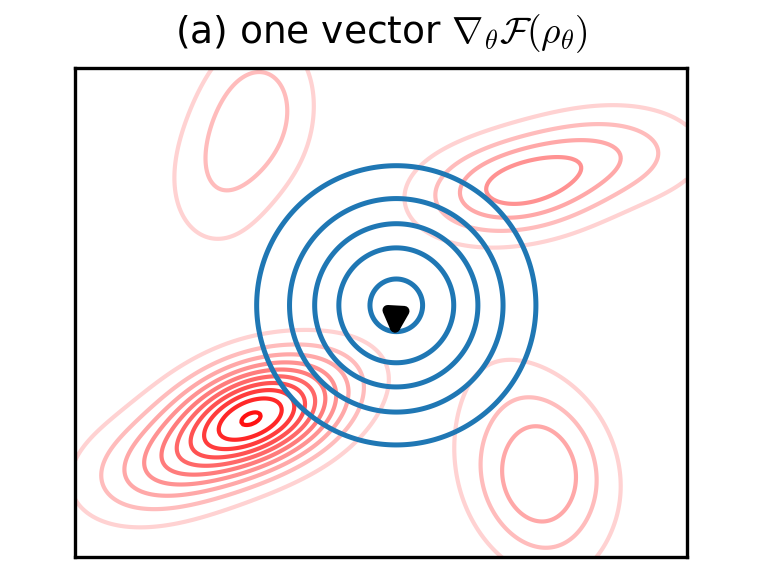
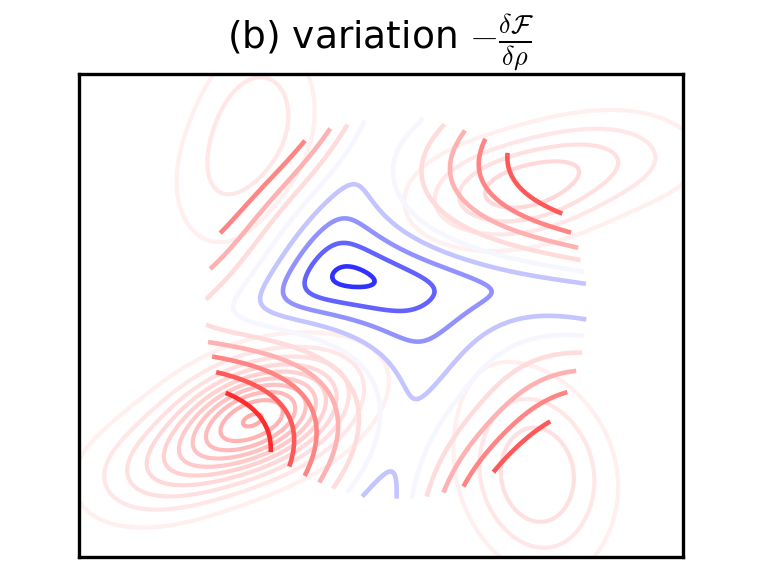
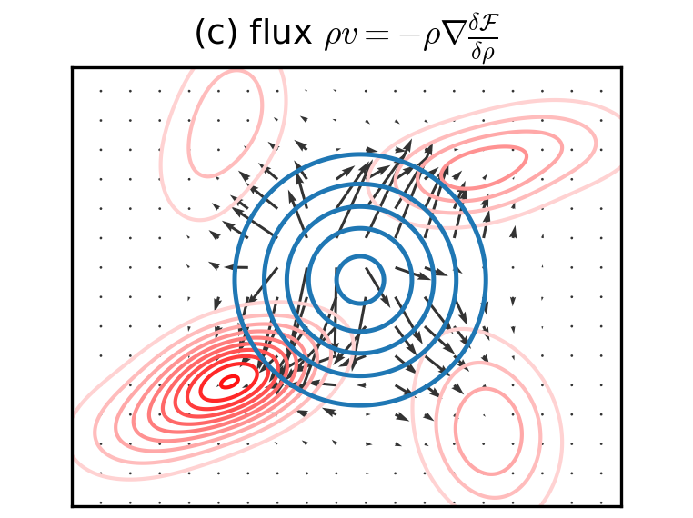
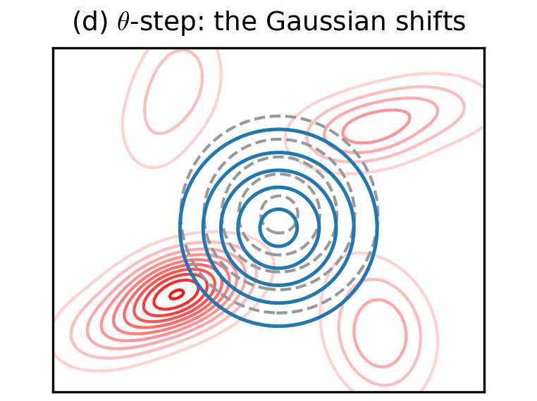
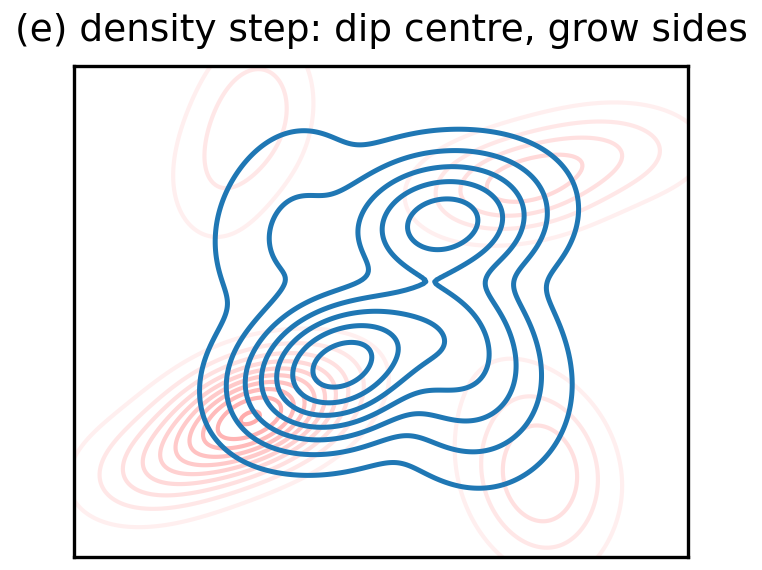
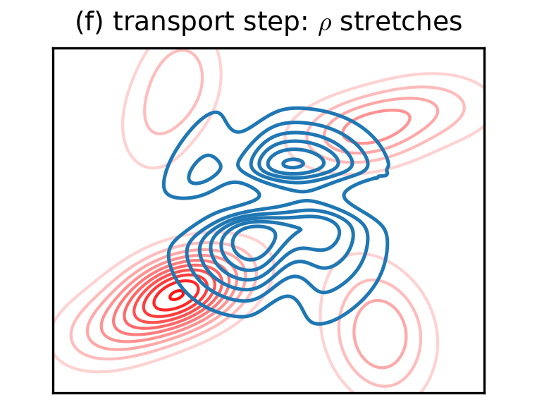
Parametric view: jax.grad gives \nabla_\theta \mathcal{F}(\rho_\theta)
Measure view: the first variation \fv{\mathcal{F}}{\rho}(x) says how the density should change everywhere
\gdef\fv#1#2{\colorbox{lemonchiffon}{$\frac{\delta #1}{\delta #2}$}} \mathcal{F}(\rho) = \int U \mathrm{d}\rho + \beta^{-1} \int \rho\log\rho \, \mathrm{d}x \qquad\qquad \fv{\mathcal{F}}{\rho} = U + \beta^{-1}(1 + \log\rho), \qquad v = -\nabla\fv{\mathcal{F}}{\rho}
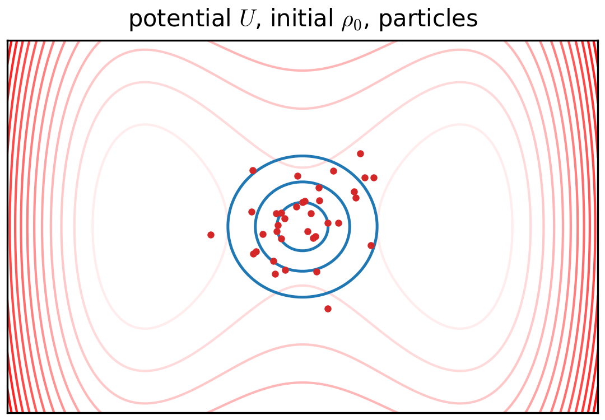
\gdef\fv#1#2{\colorbox{lemonchiffon}{$\frac{\delta #1}{\delta #2}$}} \mathcal{F}(\rho) = \int U \mathrm{d}\rho + \beta^{-1} \int \rho\log\rho \, \mathrm{d}x \qquad\qquad \fv{\mathcal{F}}{\rho} = U + \beta^{-1}(1 + \log\rho), \qquad v = -\nabla\fv{\mathcal{F}}{\rho}
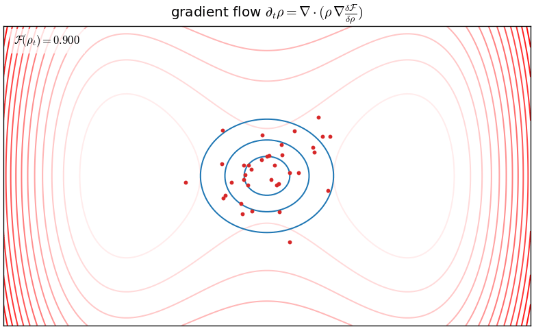
[Knoblauch'19]
jax.grad, torch.autograd]AutoFD [Lin'23, github.com/sail-sg/autofd] with operator primitivesDimple [Luedtke'25] mechanizes the EIF \fv{\mathcal{F}}{p_\theta} similar to AutoFD, while MC-EIF approximates [Agrawal'24]Frangakis'15, Carone'19, Jordan'22, Mukhin'25]\Rightarrow
Can we do this?
Directional derivative reveals implicit gradient in vector and measure spaces: \begin{aligned} \text{vector:} \quad \delta_{\mathbf{v}} f(\mathbf{x}) &= \left.\frac{d}{d\varepsilon}\right|_{\varepsilon=0} f(\mathbf{x} + \varepsilon\mathbf{v}) = \sum_{i=1}^{n} \frac{\partial f}{\partial x_i}(\mathbf{x}) v_i \\[0.7em] \text{measure:} \quad \delta_\chi\mathcal{F}(\rho) &= \left.\frac{d}{d\varepsilon}\right|_{\varepsilon=0}\mathcal{F}(\rho + \varepsilon\chi) = \int \fv{\mathcal{F}}{\rho}(\mathbf{x}) \mathrm{d}\chi(\mathbf{x}), \qquad \int \mathrm{d}\chi = 0 \end{aligned}
\fv{\mathcal{F}}{\rho}(x) is the measure-space partial derivative: sensitivity of \mathcal{F}(\rho) to change of mass at x
No autodiff exists for \fv{\mathcal{F}}{\rho}
\fv{\mathcal{F}}{\rho} is an implicit inverse problem
For expectations \mathcal{F}(\rho) = \int g \mathrm{d}\rho we can apply Dirac perturbation \chi = \delta_{\mathbf{x}_0} \delta_{\delta_{\mathbf{x}_0}}\mathcal{F} = \left.\frac{d}{d\varepsilon}\right|_{\varepsilon=0}\mathcal{F}\big(\rho + \varepsilon\delta_{\mathbf{x}_0}\big) = \left.\frac{d}{d\varepsilon}\right|_{\varepsilon=0}\Big(\int g \mathrm{d}\rho + \varepsilon g(\mathbf{x}_0)\Big) = g(\mathbf{x}_0) = \fv{\mathcal{F}}{\rho}(\mathbf{x}_0)
Earlier methods use finite-diff [Frangakis'15], smoothed Dirac [Carone'19, Jordan'22]
Full mechanisation as an exact JVP at \varepsilon = 0
Works on densities and density-free measures (particles)
Undefined for density integrals \int g\big(x, \rho(x)\big) \mathrm{d}x, eg. entropy \int \rho \log \rho \mathrm{d}x
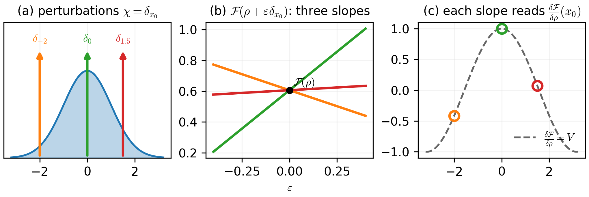
Assume a density \rho(\mathbf{x}) and a functional with linear operators (Expectations \int g\,\mathrm{d}\rho are the special case T=\mathrm{Id}) \mathcal{F}(\rho) = \int g\big(\mathbf{x}, T\rho(\mathbf{x})\big)\,\mathrm{d}\mathbf{x}
Textbook derivation: \fv{\mathcal{F}}{\rho}(\mathbf{x}) = T^{*}\!\left[\frac{\partial g}{\partial T\rho}\right]\!(\mathbf{x}) .
Earlier works consider slots (\rho, \nabla\rho) manually [Gelfand'00], mechanise over functions on a grid [AutoFD, Lin'23], or over parametric models \rho_\theta [Dimple, Luedtke'25]
Full mechanisation against operator zoo (gradient, divergence, convolution, composition, etc)
Covers explicit functionals: entropy, Fisher information, Dirichlet/Sobolev energies, f-divergences, interaction, free energies.
Undefined for density-free measures (eg. particles)
\begin{aligned} \delta_h\mathcal{F} &= \left.\frac{d}{d\varepsilon}\right|_{\varepsilon=0} \mathcal{F}(\rho + \varepsilon h) && \text{Gâteaux derivative} \\ &= \left.\frac{d}{d\varepsilon}\right|_{\varepsilon=0} \int g\Big(\mathbf{x}, T(\rho + \varepsilon h)(\mathbf{x})\Big) \mathrm{d}\mathbf{x} && \text{density-integral form} \\ &= \left.\frac{d}{d\varepsilon}\right|_{\varepsilon=0} \int g\Big(\mathbf{x}, T\rho(\mathbf{x}) + \varepsilon Th(\mathbf{x})\Big) \mathrm{d}\mathbf{x} && \text{linearity of } T \\ &= \int \frac{\partial g}{\partial T\rho}(\mathbf{x}) \cdot Th(\mathbf{x}) \mathrm{d}\mathbf{x} = \Big\langle \frac{\partial g}{\partial T\rho}, Th \Big\rangle && \text{chain rule — linearization} \\ &= \Big\langle T^{*}\Big[\frac{\partial g}{\partial T\rho}\Big], h \Big\rangle && \text{adjoint — transpose rule} \\ \fv{\mathcal{F}}{\rho} &= T^{*}\left[\frac{\partial g}{\partial T\rho}\right] && \text{first variation} \end{aligned}
| Density integrand \int g(\mathbf{x}, T\rho(x))\,\mathrm{d}\mathbf{x} — entropy, Fisher, f-divergences | Expectation \int g(x)\,\mathrm{d}\rho(x) — potential, moments, interaction | |
|---|---|---|
| Density \rho(\mathbf{x}) — parametric, neural & flows, mixtures / KDEs | Dirac · adjoint | Dirac · adjoint |
| Measure \rho — particles \frac{1}{N}\sum_i \delta_{x_i}, implicit generators | Dirac · adjoint | Dirac · adjoint |
Ill-posed corner: a density integral on a density-free measure
Fallback: smooth the measure with the KDE \kappa_\sigma \star \rho and adjoint, bias O(\sigma^2) from the KDE alone
We mix and match Dirac, Adjoint and analytic leaves to build an algebra
\frac{\delta(\mathcal{F}_1+\mathcal{F}_2)}{\delta \rho} = \frac{\delta \mathcal{F}_1}{\delta \rho} + \frac{\delta \mathcal{F}_2}{\delta \rho}
\frac{\delta(\mathcal{F}_1\mathcal{F}_2)}{\delta \rho} = \mathcal{F}_1\frac{\delta \mathcal{F}_2}{\delta \rho} + \mathcal{F}_2\frac{\delta \mathcal{F}_1}{\delta \rho},
\frac{\delta(\Phi\circ\mathcal{F}_1)}{\delta \rho} = \Phi'\big(\mathcal{F}_1(\rho)\big)\,\frac{\delta \mathcal{F}_1}{\delta \rho}.
Example — a Cahn–Hilliard free energy: \begin{aligned} \mathcal{F}(\rho) &= \underbrace{\alpha \int U \mathrm{d}\rho}_{\text{drift (Dirac)}} + \underbrace{\tfrac{\kappa}{2} \int \|\nabla\rho\|^2 \mathrm{d}\mathbf{x}}_{\text{Dirichlet (adjoint } \nabla)} + \underbrace{\tfrac{\gamma}{4} \int (\rho^2 - a^2)^2 \mathrm{d}\mathbf{x}}_{\text{double well (adjoint Id)}} + \underbrace{\lambda \int \rho \log\tfrac{\rho}{q} \mathrm{d}\mathbf{x}}_{\text{KL prior (adjoint Id)}} \\[0.9em] \fv{\mathcal{F}}{\rho} &= \alpha U - \kappa\Delta\rho + \gamma\rho(\rho^2 - a^2) + \lambda\big(1 + \log\tfrac{\rho}{q}\big) \end{aligned}
We assemble automatically through 1 Dirac, 3 adjoints to 4.4\times10^{-16} precision
Experiments
All three mechanisms reproduce analytic FVs at float64 ULP (\le 4.8\times10^{-15}), at 2x the cost of hand-coded formulas.
| Functional | Mechanism | vs analytic | vs registered | jit (ms) | eval (\mus) |
|---|---|---|---|---|---|
| Entropy -\rho\log\rho | adjoint \nabla | 8.1\times10^{-16} | 2.4\times10^{-16} | 34 | 11.8 |
| Fisher \rho\|\nabla\log\rho\|^2 | adjoint \nabla | 4.8\times10^{-15} | — | 49 | 25.3 |
| Interaction (density) | adjoint W\star | 7.9\times10^{-4} (MC) | — | 92 | 3.9\times10^4 |
| Interaction N=10 | Dirac | 2.0\times10^{-2} (MC) | 0 | 33 | 50.7 |
| Interaction N=1000 | Dirac | 1.7\times10^{-3} (MC) | 0 | 40 | 1865 |
| Product/chain \log F_{\mathrm{pot}} \cdot F_{\mathrm{ent}} | algebra | 7.9\times10^{-16} | — | 16 | 6.2 |
| Cahn–Hilliard 4-leaf | algebra | 4.4\times10^{-16} | — | 71 | 23.4 |
AIPW setup: data o = (X, A, Y) \sim P, estimand ATE \psi(P) = \mathbb{E}_P[Y(1) - Y(0)], nuisances \mu_a(x) = \mathbb{E}[Y \mid A{=}a, x] and propensity \pi(x) = P(A{=}1 \mid x). The hand-derived influence function [Robins'94, Kennedy'22]:
\mathrm{IF}(o) = \mu_1(X) - \mu_0(X) + \frac{A (Y - \mu_1(X))}{\pi(X)} - \frac{(1{-}A)(Y - \mu_0(X))}{1 - \pi(X)} - \psi(P)
OttoGrad instead routes \psi through integrate(P, ·) and reads \mathrm{IF}(o) = \left.\frac{d}{d\varepsilon}\right|_{\varepsilon=0} \psi\big((1{-}\varepsilon)P + \varepsilon\delta_o\big) — Dirac at float64 ULP; the FD secant of prior work V-shapes, best cell 2.4\times10^{-8}.
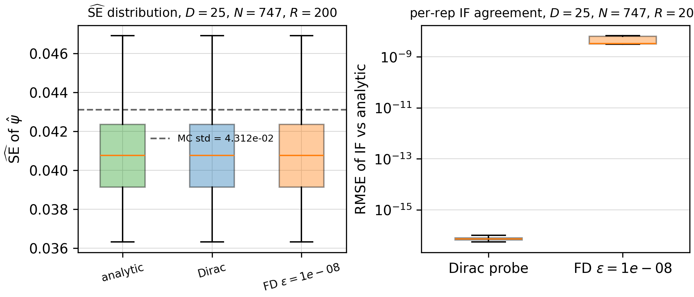
~3×10⁷× tighter than FD’s best cell — no \varepsilon grid, no bandwidth. Holds across the AIPW family and at IHDP scale (D{=}25, N{=}747).
In finite dims reverse mode wins (one pass vs n). On a measure \fv{\mathcal{F}}{\rho} is a function: sampling it at M points costs O(MN) either way — both modes are O(MN).
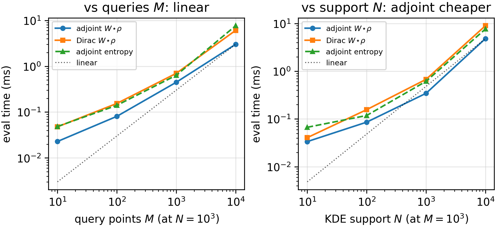
So applicability, not cost, picks the probe — which cell of the coverage table you fall in.
The composition algebra also amortises repeated reads by 250–610× vs an opaque re-evaluated composite.
A score probe perturbs \rho_\theta along \partial_\theta\rho_\theta = \rho_\theta\mathbf{s}_\theta. The Gâteaux derivative reduces to a parametric gradient, giving the EIF as a tangent projection:
\fv{\mathcal{F}}{\rho_\theta}(\mathbf{x}_0) = \mathbf{s}_\theta(\mathbf{x}_0)^\top \mathbf{I}_\theta^{-1}\,\nabla_\theta\mathcal{F}(\rho_\theta) .
Partial variations — functionals of several measures: mechanise the partial first variation \frac{\delta}{\delta \rho_i} \mathcal{F}\big(g(\rho_1, \rho_2, \ldots)\big).
A closed algebra — extend the algebra g to be closed under the full probabilistic calculus:
Example — a function g of a conditional expectation, with \rho = \rho_X \otimes \rho_{Y|X}: \mathcal{F}(\rho) = \mathbb{E}_{\rho_X}\Big[ g\big( \mathbb{E}_{\rho_{Y|X}}[\, Y \mid X \,] \big) \Big], \qquad \fv{\mathcal{F}}{\rho_X} = ? \qquad \fv{\mathcal{F}}{\rho_{Y|X=x}} = ? \qquad \fv{\mathcal{F}}{\rho_{X}} = ? partial variations against the marginal and the conditional — the chain rule through the inner \mathbb{E}[Y \mid X]
One Riesz pairing, read by one autodiff JVP at \varepsilon=0, composed by a sum/product/chain algebra over heterogeneous leaves.
A new functional is composed from registered leaves; its first variation or influence function is read off — no per-functional derivation.
github.com/ottograd